Unidad IV
Procesamiento de Computadoras
El procesamiento que realiza una computadora es una serie de acciones que realiza un CPU cuando recibe información por programas de software instalados en el disco duro de una computadora y cargados en la memoria RAM. Aunque los sistemas informáticos modernos se han vuelto mucho más rápidos y complejos que sus homólogos anteriores, siguen realizando el mismo tipo básico de procesamiento informático.
4.1.- Aspectos básicos de la computación paralela
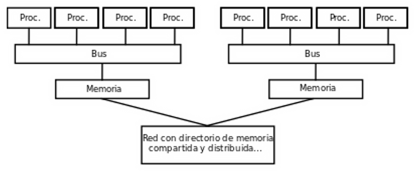
La computación paralela es una técnica de procesamiento de información que se basa en la utilización de múltiples procesadores para llevar a cabo una tarea en paralelo, en lugar de utilizar un solo procesador. Esta técnica permite mejorar la velocidad y eficiencia de los cálculos y análisis de datos en la computadora.
Sistemas de procesamiento paralelo
Los sistemas de procesamiento paralelo se pueden clasificar en dos categorías: simétricos y asíncronos. Uno donde todos los procesadores comparten la misma memoria, y otro donde cada procesador tiene su propia memoria.
Herramientas de computación en paralelo
Las herramientas de computación en paralelo son programas y bibliotecas que se utilizan para programar y ejecutar aplicaciones en sistemas paralelos, de forma que sea posible explotar el máximo provecho a estos.
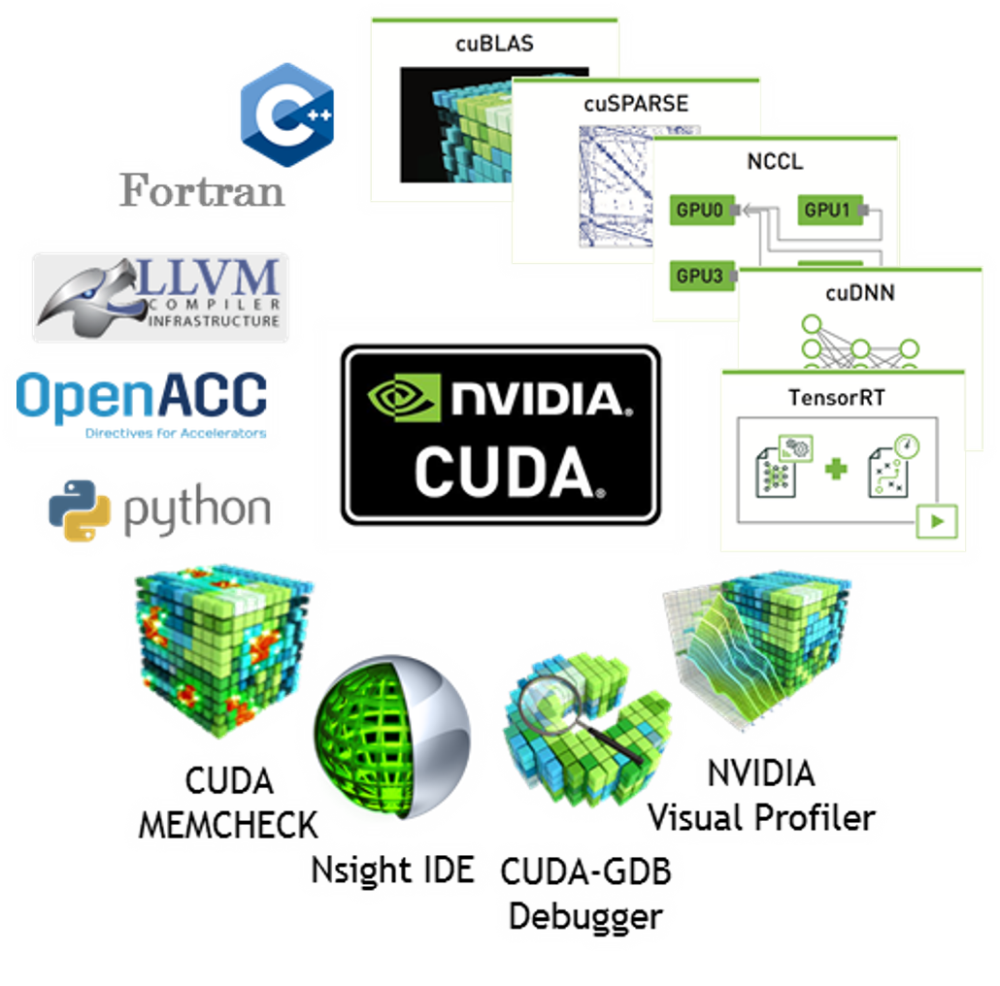Un ejemplo de esto es la herramienta CUDA desarrollada por Nvidia, la cual permite que aplicaciones aprovechen el procesamiento paralelo para el procesamiento de gráficos, usando la GPU como un coprocesador usando paralelamente sus núcleos.
4.2.- Tipos de computación paralela
El paralelismo se ha empleado por mucho tiempo, sobre todo en la computación demandante, el interés ha crecido debido a las limitaciones físicas que impiden el aumento de la frecuencia, hay varias formas diferentes de computación paralela, como por ejemplo:
- Paralelismo a nivel de bit: Es la aceleración en la arquitectura de computadoras mediante la duplicación del tamaño de la palabra, reduciendo la cantidad de instrucciones que el procesador debía ejecutar para realizar operaciones en variables cuyos tamaños eran mayores que la longitud de la palabra.
- Paralelismo a nivel de instrucción: Se refiere a la posibilidad de reordenar y combinar en grupos las instrucciones que conforman un programa para ser ejecutadas en paralelo.
- Paralelismo a nivel de datos: Es inherente en programas con ciclos y se enfoca en la distribución de los datos entre los diferentes nodos computacionales que deben ser tratados en paralelo.
- Paralelismo a nivel de tareas: Se refiere a la capacidad de realizar cálculos completamente diferentes en cualquier conjunto igual o diferente de datos.
4.2.1- Clasificación
Las computadoras paralelas pueden ser clasificadas acorde con el nivel en el que el hardware soporta paralelismo, siendo esta clasificación análoga a la distancia entre los nodos básicos de cómputo. Estos no son excluyentes entre sí.
Computación Multinúcleo
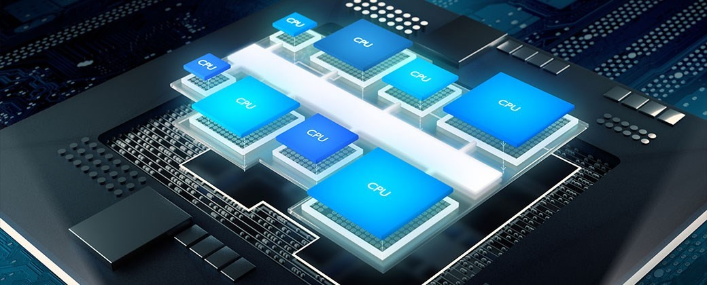Un procesador multinúcleo es un procesador que incluye múltiples unidades de ejecución (núcleos) en el mismo chip. Por ende un procesador multinúcleo puede ejecutar múltiples instrucciones por ciclo de secuencias de instrucciones múltiples.
Multiprocesamiento Simétrico
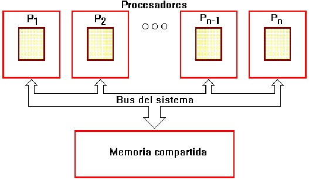Un multiprocesador simétrico es un sistema computacional con múltiples procesadores idénticos que comparten memoria y se conectan a través de un bus. La contención del bus previene el escalado de esta arquitectura.
Computación En Clúster
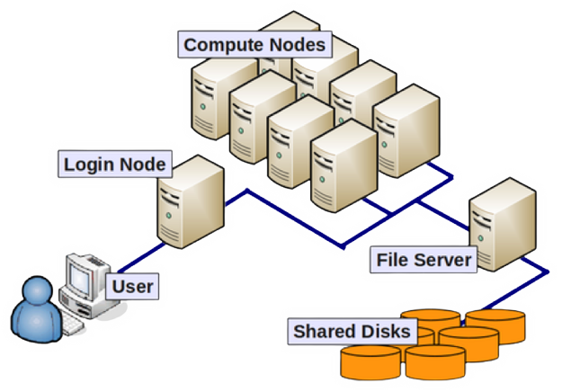Un clúster es un grupo de ordenadores débilmente acoplados que trabajan en estrecha colaboración, de modo que en algunos aspectos pueden considerarse como un solo equipo, ya que suelen tener un solo nodo principal, una cantidad de nodos de procesamiento y, posiblemente, algunos nodos especializados.
Procesamiento Paralelo Masivo
Es un paradigma de procesamiento en el que cientos o miles de nodos de procesamiento trabajan en partes de una tarea informática en paralelo. Cada uno de estos nodos ejecuta instancias individuales de un sistema operativo. Tienen sus propios dispositivos de entrada y salida y no comparten memoria. Logran una tarea informática común comunicándose entre sí a través de una interconexión.
Computación Distribuida
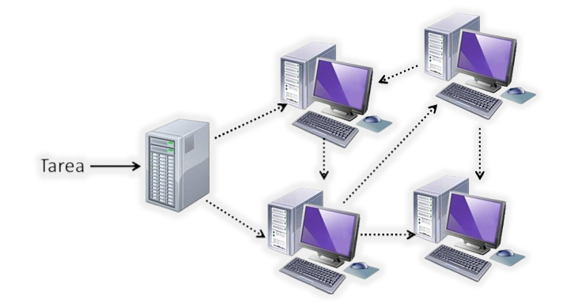Es un método que consiste en hacer que varias computadoras trabajen juntos para resolver un problema común. De este modo, una red de computadoras forma una única que brinda recursos a gran escala para afrontar desafíos complejos.
Computadoras Paralelas Especializadas
Existen dispositivos paralelos especializados que generan interés. Aunque no son específicos para un dominio, tienden a ser aplicables sólo a unas pocas clases de problemas paralelos.
Circuitos integrados de aplicación específica
Debido a que un circuito integrado para aplicaciones específicas es específico para una aplicación dada, puede ser completamente optimizado para esa aplicación. Como resultado, para una aplicación dada, un circuito integrado para aplicaciones específicas tiende a superar a un ordenador de propósito general.
Procesadores vectoriales
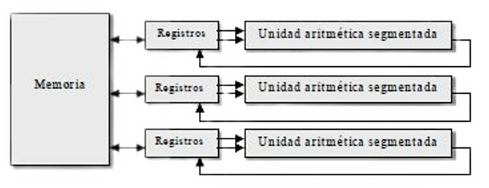Se trata de procesadores con unidades vectoriales segmentadas, además de unidades escalares. Cada unidad vectorial dispone de un banco de registros vectoriales y una unidad funcional vectorial fuertemente segmentada. Dispone de instrucciones escalares clásicas e instrucciones vectoriales (load, store, alu, mixed).
4.2.2- Arquitectura de computadores secuenciales
Las computadoras secuenciales se basan en el modelo introducido por John Von Neumann, la cual consiste en:
- Una Unidad Central de Procesamiento (CPU).
- Memoria principal para almacenar información.
- Bus donde fluyan los datos.
- Mecanismo de sincronización.
Segmentación de Instrucciones Pipeline
Por las limitaciones que este tiene se han desarrollado algunas estrategias para aumentar el rendimiento. La más conocida es la segmentación de instrucciones Pipeline que consiste en llevar a la cola de instrucciones la siguiente instrucción que se ejecutará
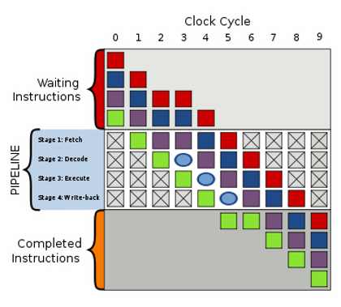En estos sistemas, los valores de las salidas, en un momento dado, no dependen exclusivamente de los valores de las entradas en dicho momento, sino también de los valores anteriores. El sistema más simple que existe se denomina: Biestable.
Biestable
Es un multivibrador capaz de permanecer en uno de dos estados posibles durante un tiempo indefinido en ausencia de perturbaciones. Esta característica es ampliamente utilizada en electrónica digital para memorizar información. El paso de un estado a otro se realiza variando sus entradas.
La mayoría de estos sistemas están gobernados por señales de reloj a los cuales se los denomina sincronos. Pero al contrario a todos ellos que no son gobernados por éste, se les conoce como asíncronos. Estos pueden encontrarse en forma de Circuito integrado (Contador) o como estructuras en sistemas programados (Registros de desplazamiento):
- Contador: Circuito secuencial construido a partir de biestable y puertas lógicas capaz de almacenar y contar los impulsos que recibe en la entrada destinada a tal efecto, asimismo también actúa como divisor de frecuencia.
- Registros de desplazamiento: Consistente en una serie de biestables, generalmente de tipo D, conectados en cascada, que basculan de forma sincrénica con la misma sefial de reloj.
Taxonomía de Flynn
Esta taxonomía de las arquitecturas está basada en la clasificación atendiendo al flujo de datos
e instrucciones en un sistema. Un flujo de instrucciones es el conjunto de instrucciones secuenciales
que son ejecutadas por un único procesador, y un flujo de datos es el flujo secuencial
de datos requeridos por el flujo de instrucciones.
Se basa en el número de instrucciones y de la
secuencia de datos que la computadora utiliza para procesar información,
puede haber secuencias de instrucciones sencillas o múltiples y secuencias
de datos sencillas o múltiples.
Una instrucción, un dato (SISD)
Se refiere a una arquitectura computacional en la que un único procesador ejecuta un solo flujo de instrucciones, para operar sobre datos almacenados en una única memoria, características:
- La CPU procesa únicamente una instrucción por cada ciclo de reloj.
- Únicamente un dato es procesado en cada ciclo de reloj.
- Es el modelo más antiguo de computadora y el más extendido.
Multiples instrucciones, un dato (MISD)
Donde muchas unidades funcionales realizan diferentes operaciones en los mismos datos. Las arquitecturas segmentadas pertenecen a este tipo, características:
- Cada unidad ejecuta una instrucción distinta.
- Cada unidad procesa el mismo dato.
- Aplicación muy limitada en la vida real.
Una instrucción, múltiples datos (SIMD)
Es una técnica empleada para conseguir paralelismo a nivel de datos, consisten en instrucciones que aplican una misma operación sobre un conjunto más o menos grande de datos, características:
- Todas las unidades ejecutan la misma instrucción.
- Cada unidad procesa un dato distinto.
- Todas las unidades operan simultáneamente.
Múltiples instrucciones, múltiples datos (MIMD)
Es una técnica empleada para lograr paralelismo. Las máquinas que usan MIMD tienen un número de procesadores que funcionan de manera asíncrona e independiente, características:
- Cada unidad ejecuta una instrucción distinta.
- Todas las unidades operan simultáneamente.
- Cada unidad procesa un dato distinto.
4.2.3- Organización de direcciones de memoria
Una dirección de memoria es un identificador para una localización de memoria con la cual un programa o un dispositivo pueden almacenar un dato para su posterior reutilización, hay dos tipos de organización de direcciones de memoria:
- Organización de direcciones de memoria contiguas: es aquella en la que las celdas de memoria se organizan de forma consecutiva en la memoria. En este tipo de organización, la dirección de memoria de una celda se puede calcular sumando la dirección de la celda anterior y el tamaño de la celda actual.
- Organización de direcciones de memoria no contiguas: es aquella en la que las celdas de memoria se organizan en cualquier lugar de la memoria, sin ningún patrón predecible. En este tipo de organización, la dirección de memoria se asigna a cada celda de forma independiente.
La organización de direcciones de memoria es fundamental para el funcionamiento de los sistemas informáticos, ya que garantiza que los datos se almacenen y recuperen de forma eficiente y precisa. Los ingenieros de software y hardware deben comprender la organización de direcciones de memoria para diseñar sistemas que sean eficientes y confiables.
4.3.- Sistema de Memoria (compartida)
La memoria compartida puede ser accedida por múltiples programas, para comunicarse entre ellos o para evitar copias redundantes. Dependiendo del contexto, los programas pueden ejecutarse en un mismo procesador o en procesadores separados. La memoria usada entre dos hilos de ejecución dentro de un mismo programa se conoce también como memoria compartida.
Multiprocesadores
La mayoría de los multiprocesadores comerciales son del tipo UMA (Uniform Memory Access): todos los procesadores tienen igual tiempo de acceso a la memoria compartida. En la arquitectura UMA los procesadores se conectan a la memoria a través de un bus, una red multietapa o un conmutador de barras cruzadas y disponen de su propia memoria caché. Los procesadores tipo NUMA (Non Uniform Memory Access) presentan tiempos de acceso a la memoria compartida que dependen de la ubicación del elemento de proceso y la memoria.
4.3.1- Redes de Interconexión dinámica (Indirecta)
Las redes de interconexión dinámicas son una tecnología emergente que permite la conexión y comunicación entre diferentes sistemas informáticos en tiempo real. Estas redes permiten la integración de diferentes plataformas y servicios, lo que aumenta la eficiencia y reduce los tiempos de respuesta en los procesos empresariales.
Medio Compatido
Las redes de interconexión dinámica indirecta y de medio compartido son un tipo de arquitectura de redes
en las que múltiples dispositivos comparten un medio de transmisión de datos común,
como un cable o un canal inalámbrico. En esta arquitectura, no hay un nodo central que controle
la comunicación entre los dispositivos, sino que los dispositivos se comunican entre sí
a través de la red mediante el envío y recepción de paquetes de datos.
En general, las redes de interconexión dinámica indirecta y medio compartido se utilizan en redes de área
local de tamaño pequeño o mediano, donde el número de dispositivos conectados es relativamente pequeño
y la cantidad de datos transmitidos no es muy grande. Sin embargo, en redes de mayor tamaño, se suelen
utilizar otros tipos de arquitecturas de redes que permiten una transmisión más eficiente y una mejor
gestión del tráfico de datos.
Conmutadas
Una red conmutada, es clasificada como una conexión de diferentes ordenadores, independientemente de su estructura para que se puedan interconectarse y al mismo tiempo intercambiar informaciones, sin olvidar de los requerimientos o recursos que la complementan. En un determinado momento cuando todos los ordenadores están conectados de unas hacia las otras, se les da una nominación de conexión red local o local network, se compone de diferentes capas que permiten el funcionamiento y la gestión de los dispositivos conectadoss:
- La capa de transporte
- La capa de control
- La capa de aplicación
Las redes de interconexión dinámica conmutadas ofrecen ventajas frente a otras tecnologías de red, como la escalabilidad, la flexibilidad y la eficiencia energética. Permiten la integración de diferentes tipos de dispositivos y sistemas, lo que las hace ideales para la implementación de soluciones IoT y la automatización industrial.
4.4.- Sistemas de Memoria Distribuida
Los sistemas de memoria distribuida son una arquitectura de cómputo en la que la memoria principal de una computadora está distribuida en múltiples nodos o máquinas interconectadas en una red. En lugar de depender de una única memoria centralizada, los datos se almacenan y se acceden de manera distribuida en nodos.
Multicomputadores
Los sistemas multicomputadores se pueden ver como un
computador paralelo en el cual cada procesador tiene su
propia memoria local.
En estos sistemas la memoria se encuentra distribuida y no compartida como
en los sistemas multiprocesador. Los computadores se comunican a través de
paso de mensajes, ya que éstos sólo tienen acceso directo a su memoria local
y no a las memorias del resto de procesadores.
La transferencia de los datos se realiza a través de la red de interconexión que conecta un subconjunto de procesadores con otro subconjunto. La transferencia de unos procesadores a otros se realiza por tanto por múltiples transferencias entre procesadores conectados dependiendo del establecimiento de dicha red, entre sus características están:
- La memoria es privada, cada procesador tiene un mapa de direcciones propio que no es accesible directamente a los demás.
- Los nodos colaboran para ejecutar la misma aplicación.
- En un multicomputador, cada nodo es una computadora clásica.
- La compartición de datos es explícita, ya que el acceso a datos comunes es por paso de mensajes.
4.4.1- Redes de interconexión estáticas
Las redes de interconexión estáticas son topologías de red fijas utilizadas en sistemas paralelos y distribuidos para conectar nodos o procesadores. Proporcionan una comunicación eficiente entre los nodos, aunque pueden presentar limitaciones en términos de escalabilidad y flexibilidad.
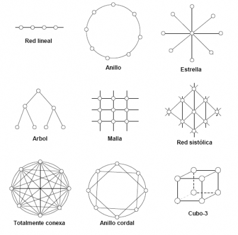Estas redes ofrecen ventajas en términos de latencia, ancho de banda y escalabilidad, ya que permiten la comunicación directa entre nodos sin depender de una única ruta de comunicación centralizada. Además, la estructura estática facilita el diseño y la implementación de algoritmos de comunicación y planificación.
Sin embargo, una limitación de las redes de interconexión estáticas es que su capacidad de escalabilidad está limitada por la cantidad de enlaces físicos disponibles y la topología de la red. Además, la falta de flexibilidad para reconfigurar la conectividad puede dificultar la adaptación a cambios en la carga de trabajo o la incorporación de nuevos nodos.
4.5.- Casos para estudio
La computación paralela se utiliza ampliamente en muchos campos y aplicaciones para realizar cálculos y tareas intensivas en computación de manera más rápida y eficiente. Algunos ejemplos de casos reales de computación paralela son:
Simulaciones científicas
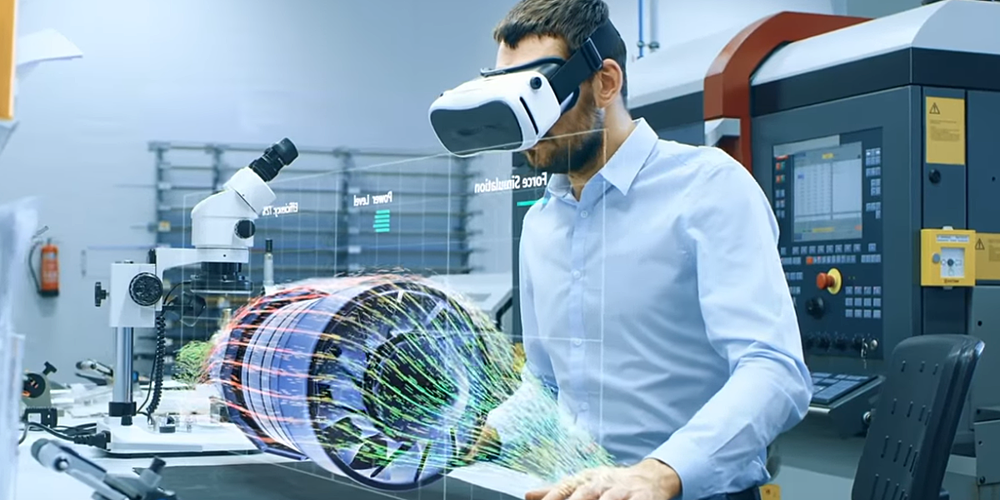Los científicos utilizan la computación paralela para simular fenómenos complejos en campos como la física, la química, la biología y la meteorología. Estas simulaciones requieren una gran cantidad de cálculos y se benefician del poder de procesamiento paralelo para acelerar los tiempos de ejecución.
Procesamiento de imágenes y video
Aplicaciones como el procesamiento de imágenes médicas, análisis de imágenes satelitales, reconocimiento facial y procesamiento de video requieren un procesamiento intensivo y se benefician de la computación paralela para realizar operaciones en paralelo en grandes conjuntos de datos.
Aprendizaje automático y redes neuronales

El entrenamiento de modelos de aprendizaje automático, como redes neuronales profundas, puede ser computacionalmente intensivo. La computación paralela se utiliza para distribuir el cálculo en múltiples nodos o unidades de procesamiento gráfico (GPU) para acelerar el entrenamiento y mejorar el rendimiento.
Análisis de big data
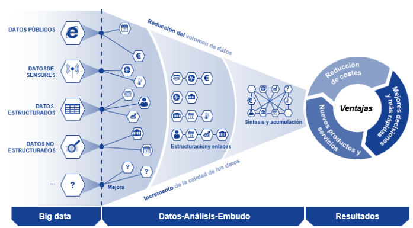El análisis de grandes volúmenes de datos en entornos de big data requiere técnicas de computación paralela para procesar y analizar los datos de manera eficiente. Esto incluye tareas como la minería de datos, el procesamiento de registros y la generación de informes en tiempo real.
Simulaciones de fluidos y dinámica de estructuras
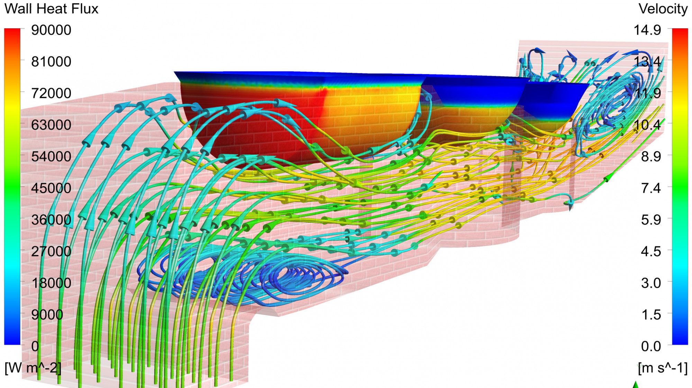En la ingeniería y la industria, se utilizan simulaciones de fluidos y dinámica estructural para analizar el comportamiento de fluidos y estructuras en diferentes condiciones. Estas simulaciones se ejecutan en paralelo para acelerar los tiempos de cálculo y permitir análisis más detallados.